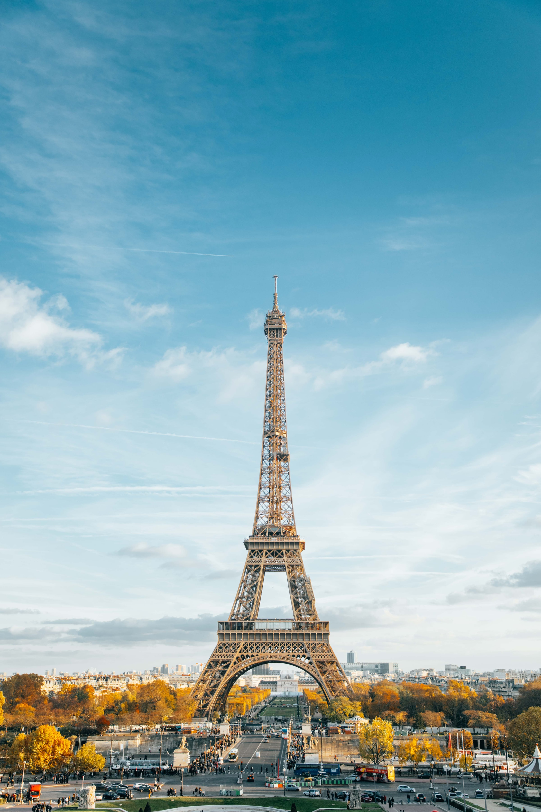
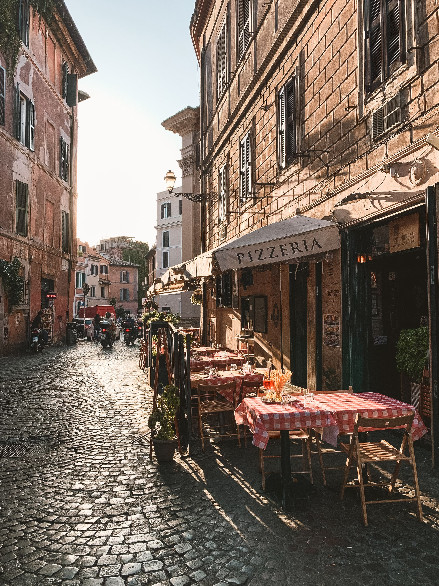
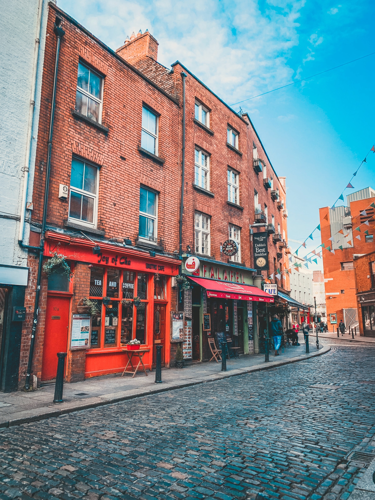
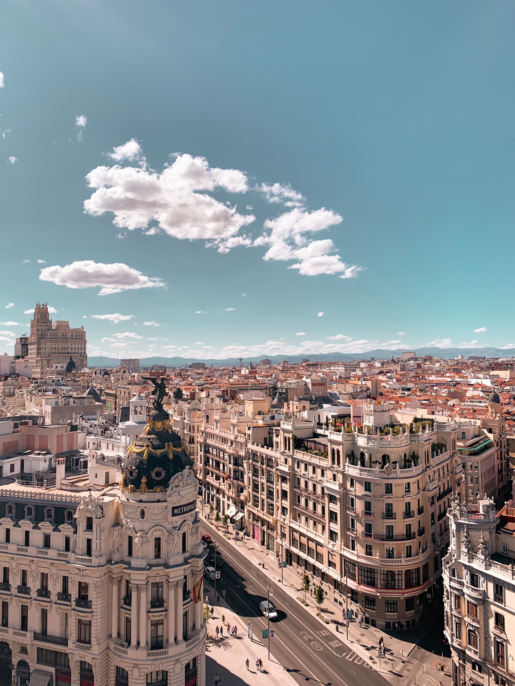
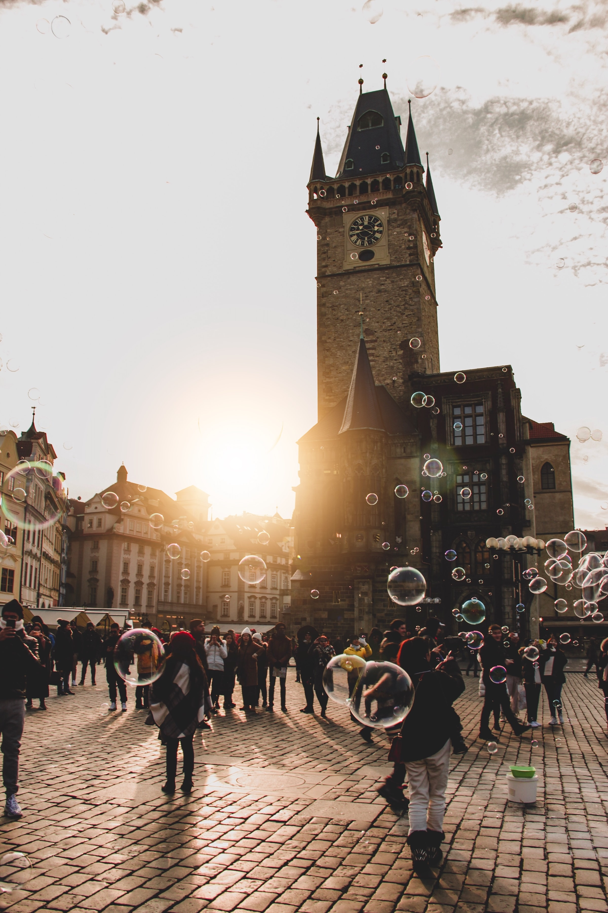

Intercâmbio Cultural
-

- 
- 
- 
- 
- 
New York
A cidade de Nova York compreende 5 distritos situados no encontro do rio Hudson com o Oceano Atlântico.
No centro da cidade fica Manhattan, um distrito com alta densidade demográfica que está entre os principais centros comerciais, financeiros e culturais do mundo.
Entre seus pontos emblemáticos, destacam-se arranha-céus, como o Empire State Building, e o enorme Central Park.
O teatro da Broadway fica em meio às luzes de neon da Times Square.
Paris
Paris, a capital da França, é uma importante cidade europeia e um centro mundial de arte, moda, gastronomia e cultura. Sua paisagem urbana do século XIX é cortada por avenidas largas e pelo rio Sena.
A cidade é conhecida por monumentos como a Torre Eiffel e a Catedral de Notre-Dame, uma construção gótica do século XII, sendo famosa também pela cultura dos cafés e por lojas de estilistas famosos na Rue du Faubourg Saint-Honoré
De cerca de 40 espécies reconhecidas como raposas, somente 12 pertencem ao gênero Vulpes das "raposas verdadeiras", do qual a raposa vermelha é a mais comum.
Do ponto de vista turístico, Paris é uma das cidades mais visitadas da Europa. Com o nosso guia de Paris você poderá descobrir todos os segredos da cidade, além de conseguir os melhores conselhos para viajar a Paris economizando.
Roma
Roma, a capital da Itália, é uma cidade cosmopolita, enorme, com quase 3.000 anos de arte, arquitetura e cultura influentes no mundo todo e à mostra.
Ruínas antigas como o Fórum e o Coliseu evocam o poder do antigo Império Romano.
A Cidade do Vaticano, sede da Igreja Católica Romana, tem a Basílica de São Pedro e os museus do Vaticano, que abrigam obras-primas como os afrescos da Capela Sistina de Michelangelo.
Você jamais, jamais passará fome em Roma. Por mais miserável que seja seu orçamento, não há como não achar um bom restaurante que ofereça um menu a bom preço.
Dublin
Dublin, capital da República da Irlanda, fica na costa leste do país, na foz do Rio Liffey. Entre seus prédios históricos destacam-se o Castelo de Dublin, que data do século 13, e a imponente Catedral de St Patrick, fundada em 1191.
Apesar de estar entre as menores capitais da Europa, Dublin, na Irlanda, pode ser considerado um verdadeiro refúgio para brasileiros que decidem passar um tempo no Velho Continente.
A capital irlandesa também é muito conhecida pelos seus pubs que agitam as noites na cidade. Se você está planejando uma viagem por essa região, confira nossas dicas de pontos turísticos para conhecer em Dublin./p>
Madrid
Madrid, a capital da Espanha, situada no centro do país, é uma cidade de avenidas elegantes e parques grandes e bem cuidados, como o Buen Retiro.
Ela é famosa pelos ricos acervos de arte europeia, entre os quais estão as obras de Goya, Velázquez e outros mestres espanhóis no Museu do Prado.
Madrid é um cidade cosmopolita que tem de tudo: de construções históricas a lojas de luxo, passando por mercados, festivais, galerias, restaurantes… não faltam opções de lugares para visitar em Madrid
Praga
Praga, a capital da República Tcheca, é dividida pelo rio Moldava. Apelidada de "a cidade dos cem pináculos", ela é conhecida pela Praça da Cidade Antiga, no coração do seu centro histórico, com construções barrocas coloridas, igrejas góticas e o Relógio Astronômico medieval, que faz uma apresentação animada de hora em hora.
Do ponto de vista climático, o verão é a melhor época para visitar Praga. Nesta época, o sol brilha na maior parte do tempo, convertendo os parques e beer gardens (cervejarias com mesas no jardim) da cidade em uma festa ao ar livre.
Se você pretende conhecer o velho continente ou mesmo fazer um mochilão pela Europa, a cidade de Praga é obrigatória. Por isso, aqui vamos te ajudar a escolher o que fazer em Praga em um roteiro de 1 até 5 dias.
FAQ
- O intercâmbio pode ser personalizado?
- Vamos te ajudar a desenhar toda estratégia para ampliar sua experiência em seu intercâmbio.Todas as atividades que você deseja realizar, você escolhe e nós planejamos, tudo para que você tenha sempre a melhor experiência de viagem combinada com aprendizado!
- Teremos suporte durante nosso intercâmbio?
- Claro! Nossos clientes terão todo o conforto, comodidade e segurança, por isso temos o melhor suporte para nossos intercambistas.
- Vocês ajudarão na escolha da residência?
- Sim! Não é maravilhoso? Nossos clientes não precisam se preocupar quanto às burocracias de residências, visto e melhores trajetos no dia a dia. O pacote inclui absolutamente tudo.
- Posso parcelar em até quantas vezes? Há desconto à vista?
- Você pode parcelar em até 12x em seu cartão. Caso opte pelo pagamento à vista, poderá ter descontos de até 5% no valor do pacote.
Números
Contato

- contato@intercambio.com
- +55 (41) 9999-9999
- Rua das Araucárias, nº 41
- Curitiba - PR
- Ajude-nos, doe 0 Bitcoin
- Seg à Sex das 8h às 18h